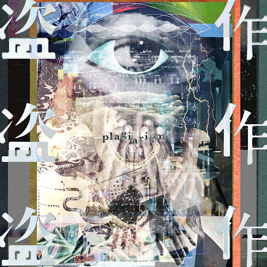

Plagiarism
앨범 · 2020년
14곡 · 46분
0:00
0:00
⏮
▶
⏭
1
Confession Of Plagiarist
2
Burglar
3
Prostitution
4
Bomber (Re-Recording)
5
Adolescent
6
Replicant
7
Flower And Badger Game
8
Middle Age, Plagiarist
9
Plagiarism
10
Thoughtcrime
11
Escape
12
Childhood, In Memories
13
Night Journey
14
Ghost In A Flower